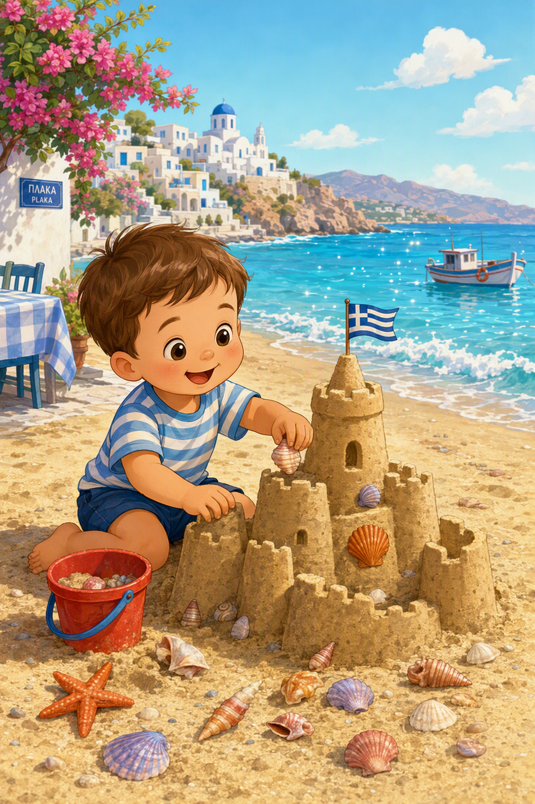
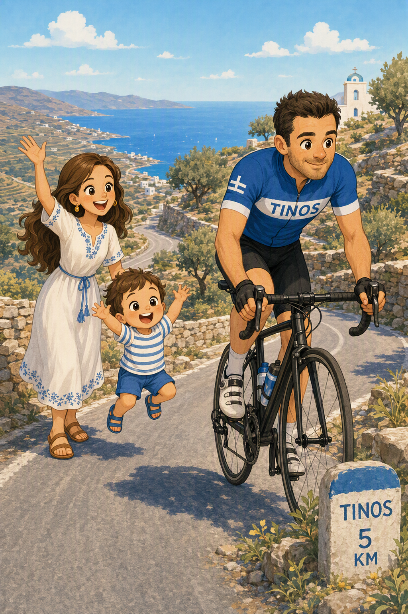
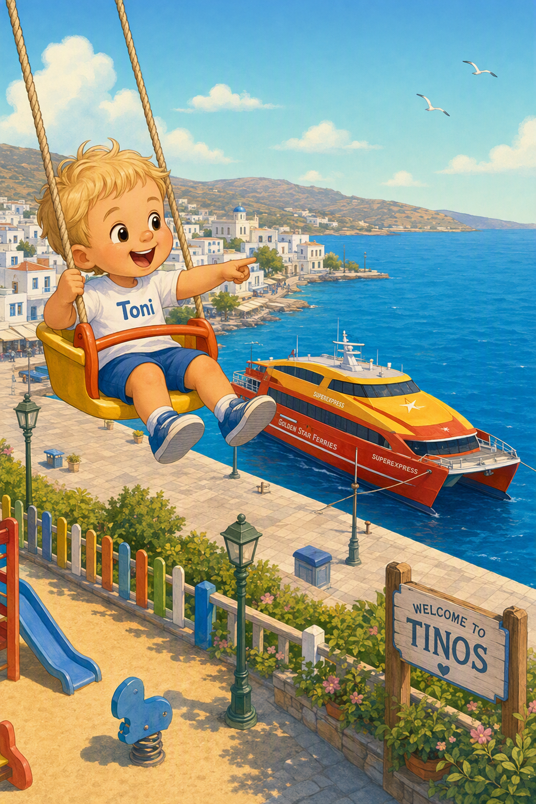
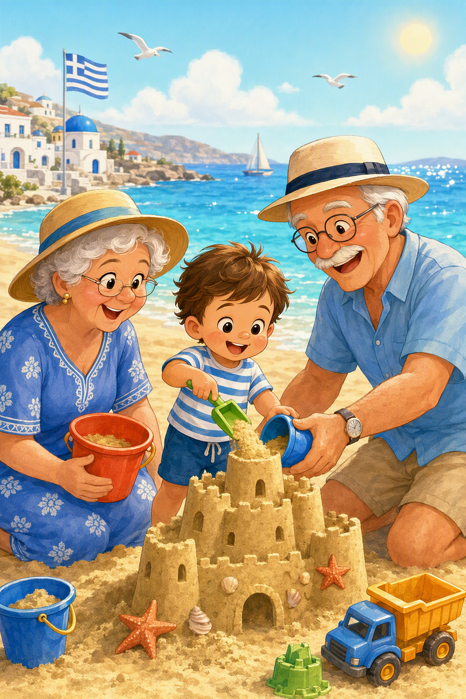
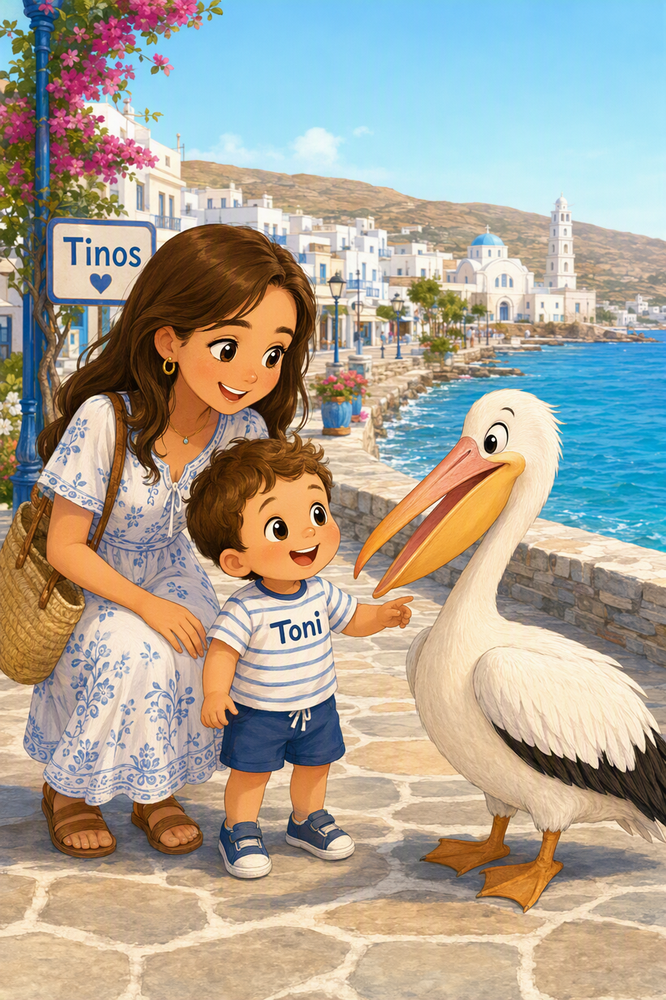
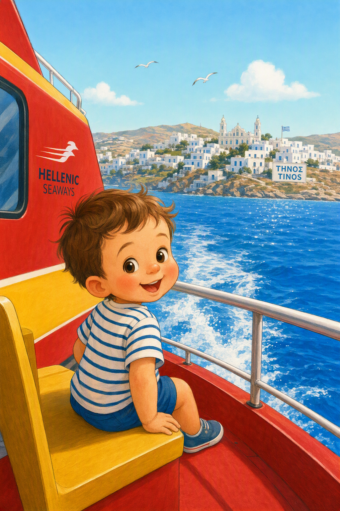

Tonis Reise nach Tinos 🇬🇷
Ein Bilderbuch für Toni

👉 Wische über die Ecke zum Umblättern
Ein Bilderbuch für Toni
👉 Wische über die Ecke zum Umblättern

Koffer packen! Wo ist das Flugzeug? Da oben! Ab geht die Reise.

Hoch oben in den Wolken... Wusch! Der Flieger fliegt ganz schnell.

Hallo Griechenland! Wir sind am Hafen in Rafina. Schau mal, wie viele Schiffe!

Tuff-tuff! Wir fahren mit dem schnellen Katamaran über das blaue Meer nach Tinos.

Platsch! Toni baut eine riesige Sandburg am Strand und sammelt bunte Muscheln.

Strampeln, Papa! Toni ruft vom Straßenrand: „Auf geht’s Papa, Schokolade kaufen!“ 🍫

Hui, wie hoch! Von der Schaukel aus sieht Toni die großen Fähren im Hafen anlegen.

Hurra! Toni baut zusammen mit Oma und Opa die allergrößte Sandburg am Meer.

Guck mal! Zusammen mit Mama Alina besucht Toni den Pelikan direkt neben dem Spielplatz.

Tschüss schöne Insel! Mit dem Katamaran geht es wieder über das große blaue Meer.
Ende ❤️